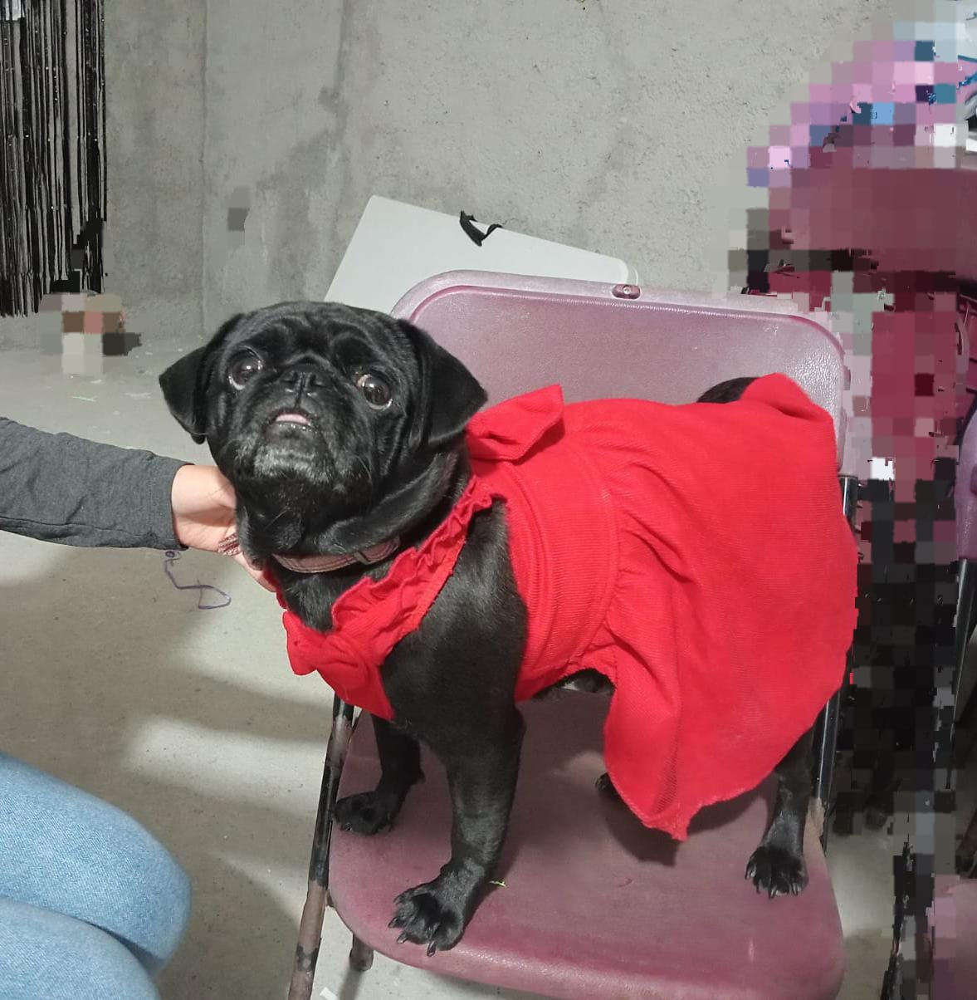
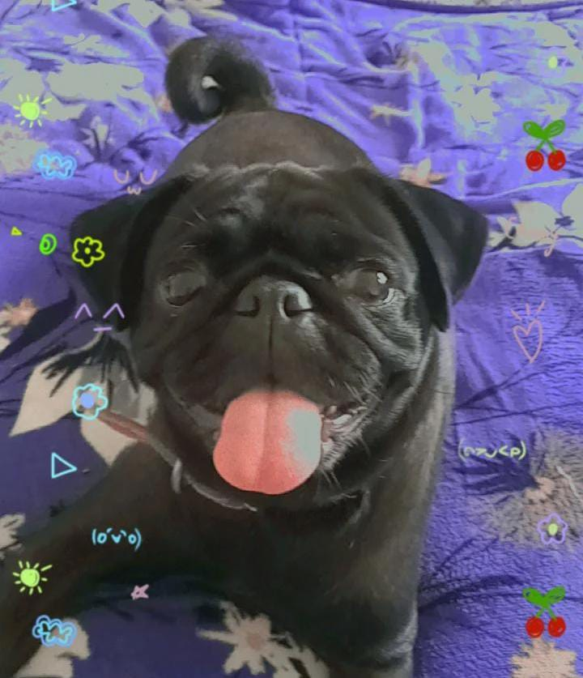

Kiara es una perrita de raza pug/carlino de 4 años, su cumpleaños es el 10 de febrero. Kiara es una perrita muy linda y amorosa, tambien es muy divertida, ama jugar y salir de paseo, pero aparte de todo eso tambien es una perrita muy inteligente.
 